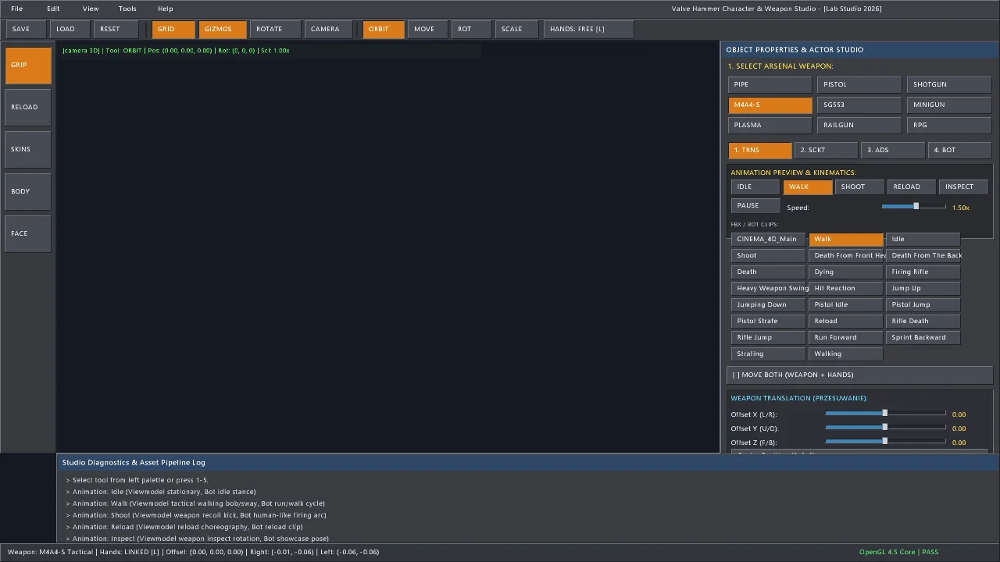

Combat Bot AI & Skeletal Dynamics [LabAI.h]
1. Combat AI Architecture & Rationale
The LabAI subsystem provides reactive, physically grounded, and visually compelling combat opponents. Unlike static turrets or simplistic pathfollowers, bots in Lab Engine:
- Operate on a rigorous Finite State Machine (FSM) with line-of-sight awareness and memory decay.
- Wield a diverse arsenal where each bot visibly carries and fires a unique weapon (Minigun, Shotgun, M4A4-S, SG553, Pistol, or Melee Pipe) matching its assigned tactical profile.
- Exhibit human-like shooting cadence with continuous recoil arcs rather than instantaneous zero-duration shots.
- Perform exact weapon drops on death: when a bot holding a Shotgun is killed, it physically drops that exact Shotgun model and texture onto the ground plane for the player to scavenge.
2. 5-State Combat Finite State Machine
Each CombatBot transitions across 5 well-defined lifecycle states:
| AI State | Trigger Condition | Animation | Behavior |
|---|---|---|---|
| Idle | Spawn / No target sighted | Idle or Pistol Idle |
Stationary scanning stance; low tick frequency; detects targets within 18 meters. |
| Patrol | Waypoints assigned | Walking (1.37s cycle) |
Linear navigation between waypoint A and B with smooth yaw turning towards travel direction. |
| Chase | Target sighted out of optimal range | Run Forward (0.50s sprint) |
Aggressive forward pursuit while maintaining collision sliding against map walls. |
| Attack | Clear LOS within firing range (< 25m) | Firing Rifle / Strafing |
Weapon cadence discharge, human recoil muzzle rise, dynamic circle-strafing, and tactical reloads. |
| Dead | Health ≤ 0.0 | Death From Front Headshot / Death |
Ceases physics, spawns exact weapon drop pickup, plays death choreography, and disables collision. |
3. Line of Sight & Branchless Slab Ray-AABB
To determine whether a bot can engage a target, the engine casts a line-of-sight ray from the bot's eye position (\(y + 1.62 ext{ m}\)) towards the target center:
bool Raycast::rayIntersectAABB(const Vec3& origin, const Vec3& dir,
const Vec3& boxMin, const Vec3& boxMax,
float& outT, Vec3* outNormal) {
Vec3 invDir(1.0f / (std::abs(dir.x) > 1e-6f ? dir.x : 1e-6f),
1.0f / (std::abs(dir.y) > 1e-6f ? dir.y : 1e-6f),
1.0f / (std::abs(dir.z) > 1e-6f ? dir.z : 1e-6f));
float t1 = (boxMin.x - origin.x) * invDir.x;
float t2 = (boxMax.x - origin.x) * invDir.x;
float t3 = (boxMin.y - origin.y) * invDir.y;
float t4 = (boxMax.y - origin.y) * invDir.y;
float t5 = (boxMin.z - origin.z) * invDir.z;
float t6 = (boxMax.z - origin.z) * invDir.z;
float tmin = std::max(std::max(std::min(t1, t2), std::min(t3, t4)), std::min(t5, t6));
float tmax = std::min(std::min(std::max(t1, t2), std::max(t3, t4)), std::max(t5, t6));
if (tmax < 0.0f || tmin > tmax) return false;
outT = tmin;
return true;
}
If the ray intersects any solid map brush or wall before reaching the target, LOS is blocked and the bot transitions into Chase to re-establish sightline.
4. Diverse Weapon Allocation across Bots
To prevent repetitive gameplay where every bot looks identical and holds a generic prop, the AIManager distributes weapons across the active bot roster:
| Bot ID | Name | Equipped Weapon | Mesh Type | Ammo Capacity | Fire Interval |
|---|---|---|---|---|---|
| Bot #0 | Alpha-Heavy | Minigun | Rotary 6-Barrel Mesh | 100 Rounds | 0.065s (920 RPM) |
| Bot #1 | Bravo-Breacher | Shotgun | Tactical Pump Mesh | 8 Shells | 0.750s (80 RPM) |
| Bot #2 | Charlie-Rifleman | M4A4-S Carbine | CAD STL (Model.stl) | 30 Rounds | 0.095s (630 RPM) |
| Bot #3 | Delta-Marksman | SG553 Rifle | Optical Scoped Mesh | 30 Rounds | 0.110s (545 RPM) |
| Bot #4 | Echo-Scout | Pistol | Polymer Sidearm Mesh | 12 Rounds | 0.220s (270 RPM) |
| Bot #5 | Foxtrot-Brawler | Melee Pipe | Rigid Steel Pipe (pipe.stl) | ∞ Melee | 0.650s (Swing Arc) |
5. Human Recoil Arc & Weapon-Specific Cadence
In older engines, AI gunfire often consisted of an instantaneous single-frame raycast with no visible weapon motion. Lab Engine introduces the Human Recoil Arc:

When a bot pulls the trigger, shootAnimTimer is set to 0.28 seconds. During this window, the skeletal animator plays "Firing Rifle" (or "Shoot"), applying a procedural upward muzzle pitch and torso twist before smoothly recovering to rest position. If a bot's magazine empties, it enters a tactical reload state for 2.2 seconds, seeking cover rather than continuing to aim forward.
6. Combat Circle-Strafing & Obstacle Sliding
During the Attack state, bots do not stand still. If the distance to the target is between 3.5m and 8.0m, bots engage in combat circle-strafing, alternating lateral movement left and right to evade incoming hitscan tracers:
// Dynamic combat strafing vector
Vec3 forward = (targetPos - bot.position).normalized();
Vec3 right = forward.cross(Vec3(0, 1, 0)).normalized();
Vec3 moveDir = right * bot.strafeDirection;
Vec3 nextPos = bot.position + moveDir * (bot.speed * 0.75f) * dt;
bool grounded = true;
LabCollision::moveAndSlide(nextPos, bot.velocity, grounded, dt, solidBoxes, 0.0f, 0.35f, 1.85f);
bot.position = nextPos;7. Exact 3D Weapon Drops on Death
A core gameplay design requirement is that enemies must drop the exact weapon they were holding. When a bot takes fatal damage, AIManager::update creates a 3D weapon pickup at the bot's death location inheriting the bot's weapon ID, custom STL mesh, and texture:
if (bot.state == AIState::Dead && !bot.hasDroppedWeapon) {
bot.hasDroppedWeapon = true;
// Instantiate 3D physics weapon pickup
WeaponPickup drop;
drop.weaponID = bot.weaponID;
drop.position = bot.position + Vec3(0.0f, 0.45f, 0.0f);
drop.ammo = bot.ammoInClip;
drop.isDroppedByBot = true;
activeWeaponPickups.push_back(drop);
}This guarantees that if a player battles a Minigun bot, the defeated bot drops a Minigun with its remaining ammunition, creating high-stakes tactical scavenge opportunities.
8. Hit Reactions & Multi-Directional Fatalities
Bot hitboxes are segmented into distinct Head and Body bounding boxes. Shots striking the head apply a 2.5× damage multiplier.
Upon receiving non-lethal damage, the bot interrupts its movement with "Hit Reaction" (kinetic flinch). Upon fatal damage, the engine selects the death animation based on impact context:
- Headshot Fatalities: Plays
"Death From Front Headshot"– violent backward head snap and ragdoll collapse. - Flanking / Back Fatalities: Plays
"Death From The Back"– forward pitch and stumble onto the ground plane. - Rifle Fatalities: Plays
"Rifle Death"– hands releasing weapon receiver and chest crumple.
See Also
- glTF 2.0 & FBX Skeletal Animation Pipeline ? Mixamo 52-bone retargeting and GPU skinning.
- Weapons & Viewmodel Kinematics ? Arsenal statistics, sway, and recoil.
- Valve Hammer Character Studio ? Bot socket calibration and weapon alignment.